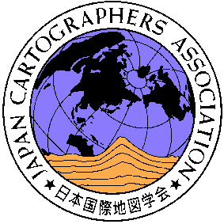

日本国際地図学会について

近年におけるマルチメディア社会の普及・発展はめざましいものがありますが、これに伴って地図情報の需要も増大し、ＧＩＳ，インターネットを通した電子地図などの新しい地図利用の技術にはめざましいものがあります。
本学会は、このような社会の変化を背景に、内外の関係団体と密接な連携のもとに、地図に関する研究活動や情報収集交換につとめ、会員諸兄にすぐれた地図情報を提供し、地図作成・地図情報利用技術等の発達に寄与することを目的として、昭和３７年１１月に設立され今日に至っております。この間、わが国を代表する地図学研究団体として、国際地図学協会 International Cartographers Association (ICA) と密接な連絡をとり、国際交流の場を広げるとともにさまざまな活動を行ってきています。
本学会は、現在約1,600名の会員を擁しておりますが、地図に関心や興味をもつ方々にとって絶好の研究・情報収集の場であると確信しております。本学会の趣旨・活動内容等についてご検討のうえ、会員としての特権をフルに活用し効率的な研鑚を積まれますようにここにご入会をお勧めする次第です。
会費・入会の手続き
本学会の会員には、普通会員（個人）と特別会員（法人・団体または定の個人）とがあり、会費はそれぞれ次のとおりです。
普通会員 年額 ７，０００円
学生会員 年額 ４，０００円
特別会員 年額 １口 ７０，０００円
また、入会の申し込みは随時受け付けておりますので、入会ご希望方は、以下に送付先をお知らせください。
事務局より案内を送付致します。
事務局メール；gakkai@jmc.or.jp